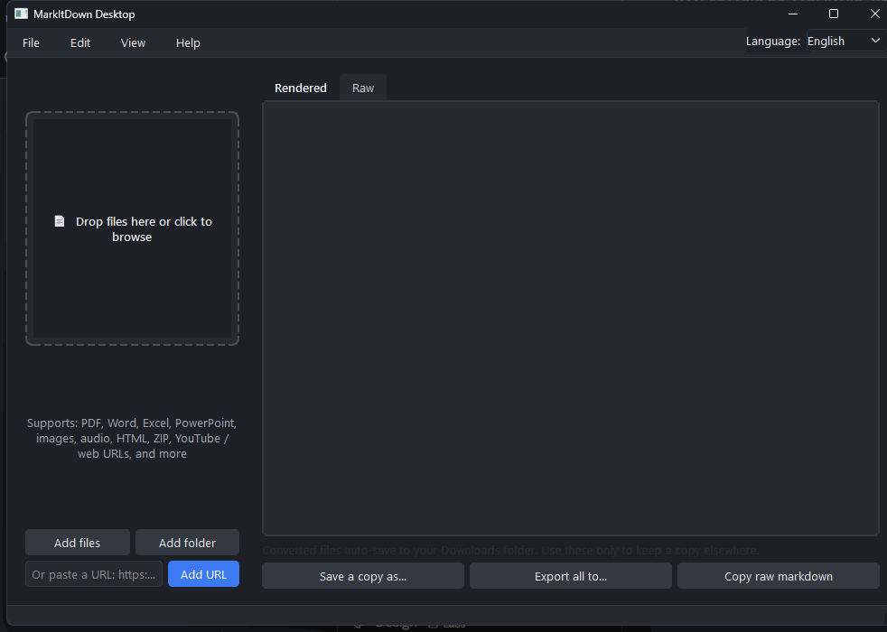

Drop a file. Get Markdown. Done.
A free, open-source desktop app for Microsoft's markitdown.
Drag any file or paste a URL — it converts and saves straight to your
Downloads folder. No manual export step, no CLI required.
Unofficial, open-source — not affiliated with Microsoft.


Why this exists
markitdown itself is a command-line tool — you run it, redirect output, manage files yourself. This wraps the same engine with no export step: drop a file and the .md lands in Downloads the moment it converts.
Auto-saves to Downloads — always
The moment a file finishes converting, the .md lands in your Downloads folder under its original name. Name collisions get a safe numeric suffix instead of overwriting anything. No export dialog to remember.
Live preview
Rendered or raw Markdown, editable before saving a copy elsewhere.
Light & dark themes
Follows your system automatically, or switch manually.
English & Spanish
Switch live from the menu bar — no restart needed.
Advanced options, out of the way
Plugins, Azure Document Intelligence, and format hints live in a separate settings dialog.
How it works
Drop a file
Or click the drop zone to browse, or paste a URL.
It converts
Runs in the background — the UI never freezes, even on large batches.
Find it in Downloads
The .md file is already there. Double-click the row to open its folder.
Supported formats
Anything markitdown supports:
Install & run
Grab a ready-to-run build for your platform, or run from source.
Windows
Installer or standalone .exe — no Python required.
macOS
Packaged app bundle, zipped.
Linux
Packaged app bundle, zipped.
Run from source
For contributors or other platforms. Requires Python 3.10+.
git clone https://github.com/andrest04/markitdown-desktop.git cd markitdown-desktop python -m pip install -r requirements.txt run.bat
git clone https://github.com/andrest04/markitdown-desktop.git cd markitdown-desktop python3 -m pip install -r requirements.txt ./run.sh